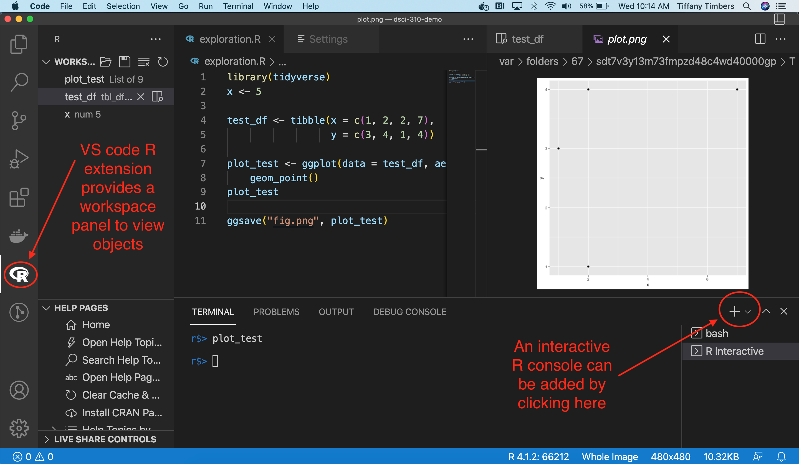

7 Filenames and data science project organization, Integrated development environments
Learning Objectives
- Explain how project organization and file naming contribute to reproducible data science
- Organize projects and name files in a sound manner
- Use an integrated development environment (IDE) to create, edit and run a script (e.g., VScode in Python, or RStudio in R)
- Use the IDE to access documentation/help, environment variables and efficiently navigate directories
- Extend and customize an IDE with useful extensions/add-ons/tools such as linters and formatters
7.1 Filenames - best practices
Attribution: much of these notes come from Jenny Bryan’s talk “Naming things” (original slides and source code)
7.1.1 Names matter

7.1.2 What works, what doesn’t?
NO
myabstract.docx
Joe’s Filenames Use Spaces and Punctuation.xlsx
figure 1.png
fig 2.png
JW7d^(2sl@deletethisandyourcareerisoverWx2*.txtYES
2014-06-08_abstract-for-sla.docx
joes-filenames-are-getting-better.xlsx
fig01_talk-scatterplot-length-vs-interest.png
fig02_talk-histogram-attendance.png
1986-01-28_raw-data-from-challenger-o-rings.txt7.1.3 Three principles for (file) names
Machine readable
Human readable
Plays well with default ordering
Awesome file names :)

7.1.4 Machine readable
- Regular expression and globbing friendly
- Avoid spaces, punctuation, accented characters, case sensitivity
- Easy to compute on
- Deliberate use of delimiters
Globbing
Excerpt of complete file listing:

Example of globbing to narrow file listing:

Same using Mac OS Finder search facilities

Same using regex in R

Punctuation
Deliberate use of "-" and "_" allows recovery of meta-data from the filenames:
"_"underscore used to delimit units of meta-data I want later"-"hyphen used to delimit words so my eyes don’t bleed


This happens to be R but also possible in the shell, Python, etc.
Recap: machine readable
Easy to search for files later
Easy to narrow file lists based on names
Easy to extract info from file names, e.g. by splitting
New to regular expressions and globbing? be kind to yourself and avoid
- Spaces in file names
- Punctuation
- Accented characters
- Different files named
fooandFoo
7.1.5 Human readable
Human readable
Name contains info on content
Connects to concept of a slug from semantic URLs
Example
Which set of file(name)s do you want at 3 a.m. before a deadline?

Embrace the slug
slug filenames 
slug 
Recap: Human readable
Easy to figure out what the heck something is, based on its name
7.1.6 Plays well with default ordering
Plays well with default ordering
Put something numeric first
Use the ISO 8601 standard for dates
Left pad other numbers with zeros
Examples
Chronological order:

Logical order: Put something numeric first

Dates
Use the ISO 8601 standard for dates: YYYY-MM-DD
Comprehensive map of all countries in the world that use the MM-DD-YYYY format
Left pad other numbers with zeros
If you don’t left pad, you get this:
10_final-figs-for-publication.R
1_data-cleaning.R
2_fit-model.Rwhich is just sad :(
Recap: Plays well with default ordering
Put something numeric first
Use the ISO 8601 standard for dates
Left pad other numbers with zeros
Recap
Three principles for (file) names
Machine readable
Human readable
Plays well with default ordering
Pros
Easy to implement NOW
Payoffs accumulate as your skills evolve and projects get more complex
Go forth and use awesome file names :)
7.2 Project organization
A good project structure looks similar to this:
project/
├── data/ *.csv
│ ├── processed/
│ └── raw/
├── reports/ *.ipynb *.Rmd
├── src/ *.py *.R
├── doc/ *.md
├── README.md
└── environment.yaml (or renv.lock)This can differ slightly between projects and for R the src directory is often just called R/, whereas for Python is has the same name as the project (project). You will learn more about project hierarchy when making packages.
7.2.1 A tour de data science project organization
Below we link to three different data science projects shared via GitHub repositories. The first is a data analysis project, while the latter two are data science tools (an R and a Python package, respectively).
As you explore these projects, note the following similarities: - Files related generally to the project are found in the project root (e.g., README, CODE_OF_CONDUCT.md, computational environment files, etc) - Code files are generally found in the src or R directory - data houses raw and processed data - doc houses documentation files and or documents related to the project (sometimes there is both a doc and reports directory when there are two kinds of writing in a project). - Other directories can be added as needed to group files with like/similar functions. Most important is that they have descriptive and obvious names related to the directory contents.
Example projects
7.3 Integrated development environments
Integrated development environments (IDEs) are software that provide comprehensive tools for programming in one place.
The classic Jupyter notebook interface is typically not considered an IDE, however the newer, JupyterLab interface is.
Other very popular IDEs for data science include RStudio and VSCode. We will now explore these and look for similarities to identify key IDE features important for developing code for data science.
RStudio was originally developed to work with the R programming language, but now it can work with Python well too! If you would like to use RStudio with Python, please follow the instructions here on how to configure this: https://ttimbers.github.io/intro-to-reticulate/setup-instructions/setup-after-installing-python.html

If you would like to use VS Code with Python, then please follow the instructions below on how to configure this:
Install the VSCode Python Extension in your VSCode application
Code can be sent line-by-line to the Python console via
Shift+Enter. The first time you do this, an interactive iPython console will open up. FutureShift+Enterkeystrokes during that work session will send code to that console.A bash command line terminal console can be added by clicking the Terminal > New Terminal menu item, and then the “+” symbol and selecting “bash”.
If you would like to use VS Code with R, please follow the instructions below on how to configure this:
- Install the VSCode R Extension in your VSCode application.
- In the RStudio R console, install
languageserverR package viainstall.packages("languageserver"). - Install the
radianPython package (which gives an improved R console in VS Code) via runningconda install radianin the terminal. - In the VS Code settings (found by clicking the Code > Preferences > Settings menu item) search for “r.path” and paste the path to
radianunder the textbox for your operating system (you can find the path toradianby typingwhich radianin the terminal). For example, on my Mac x86 laptop, the path is/Users/tiffany/opt/miniconda3/bin/radian. - In the VS Code settings (Code > Settings > Settings) search for “R: Bracketed Paste” and select the checkbox for this setting (this allows you to send code to the R console when it is split across lines without it breaking).
- In the VS Code settings (Code > Settings > Settings) search for “Rterm: Mac” and set the path to
radian(you can find this by typingwhich radianin the terminal). - An interactive R console can be added by clicking the Terminal > New Terminal menu item, and then the “+” symbol and selecting “R Terminal”. Code can be sent line-by-line to the R console via
Cmd+Enter(Mac) orControl+Enter(Windows).
Key features of all of these IDEs includes:
- screen split into panes
- file browser
- convenient access to R/Python console and a terminal
- editor for code writing
- code autocompletion
- code/syntax highlighting